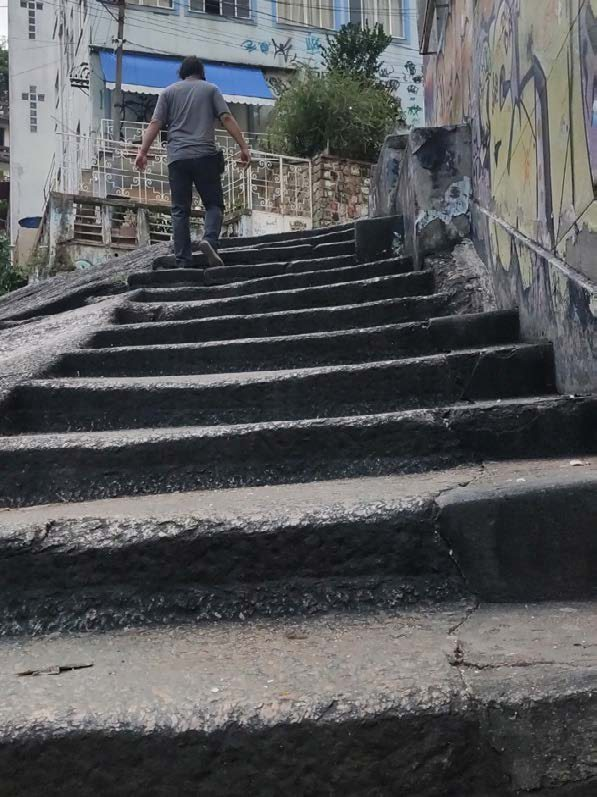
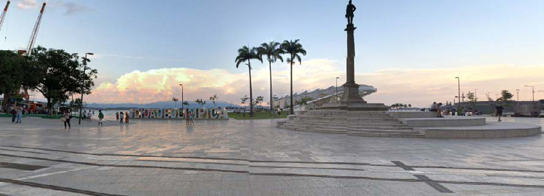

Cidade Sensível
Sound recording in preparation.
Sound work in three parts — Cinelândia, Pedra do Sal and Praça Mauá — recorded in downtown Rio de Janeiro on 20 February 2021 and released as the podcast of the exhibition Cidade Labirinto.
- Materials
- Sound work in three parts: Cinelândia, Pedra do Sal and Praça Mauá; podcast
- Venue
- Rio de Janeiro; recorded on 20 February 2021
- Exhibition
- Cidade Labirinto (2021)
- Photos
- Floriano Romano e Tiago Baldissara

